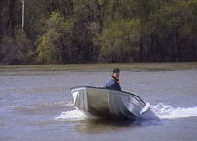
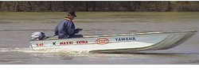

tel:+36 30 9788-120 hajó, csónak,horgászcsónak

 |
2004 április 8-án a kecskeméti Hírös Hajó cég és a YAMAHA MOTOR HUNGÁRIA KFT. egy közös vízi próbán keresett választ arra a leggyakrabban feltett kérdésre, hogy a horgászok körében stabilitása miatt kedveltté vált katamarán aljú csónak, a K MAXXI 4.60 és az ebben az évben megjelent K MAXXI EXTRA 5.45 csónakhoz milyen csónakmotort válasszunk. Milyen menetteljesítmények érhetők el a csónak különböző terhelése mellett?
A csónak és motor tesztelésnek a Tiszaörvényben található Kormorán kikötő (www.kormorankikoto.hu) adott lehetőséget napsütéses, 15 Co -os, szeles időben.
2 és 4 ütemű csónakmotorokat próbáltunk ki. A motorokat maximális fordulatszámon használtuk, így mértük GPS segítségével az álló vízhez viszonyított maximális sebességünket.
| K MAXXI 4.60 | ||||||||||||
| jogosítvány nélkül vezethető | jogosítvánnyal vezethető | |||||||||||
| F4AMHS 7,5 x 6,5 |
5CMHC 7,5 x 6,5 |
6CMHS 8,5 x 6,5 |
F8CMHS 8,5 x 6,5 |
F15AMHS 9,5 x 10,5 |
F25AMHS 9,5 x 10,5 |
|||||||
| terhelés | 4 ütem | 2 ütem | 2 ütem | 4 ütem | ||||||||
| csónak + motor + 1 fő + csomag | 132 kg-tól 432 kg-ig |
15 km/h | 131 kg-tól 471 kg-ig |
16 km/h | 137 kg-tól 477 kg-ig |
23,5 km/h | 147 kg-tól 467 kg-ig |
26 km/h | 155 kg-tól 467 kg-ig |
39,2 km/h | 172 kg-tól 492 kg-ig |
44 km/h |
| csónak + motor + 2 fő + csomag | 12,5 km/h | 13 km/h | 20,2 km/h | 24,3 km/h | 35 km/h | 41 km/h | ||||||
| csónak + motor + 3 fő + csomag | 9,5 km/h | 10,5 km/h | 16,8 km/h | 19 km/h | 32 km/h | 39,5 km/h | ||||||
| csónak + motor + 4 fő + csomag | 9,3 km/h | 10 km/h | 12,7 km/h | 14,8 km/h | 29 km/h | 37,5 km/h | ||||||
| csónak + motor + 5 fő + csomag | 9,2 km/h | 9,9 km/h | 11 km/h | 11,5 km/h | 22 km/h | 36 km/h | ||||||
| K MAXXI EXTRA 5.45 | ||||||||||||
| jogosítvány nélkül vezethető | jogosítvánnyal vezethető | |||||||||||
| F4AMHS 7,5 x 6,5 |
5CMHC 7,5 x 6,5 |
6CMHS 8,5 x 6,5 |
F8CMHS 8,5 x 6,5 |
F15AMHS 9,5 x 10,5 |
F25AMHS 9,5 x 10,5 |
|||||||
| terhelés | 4 ütem | 2 ütem | 2 ütem | 4 ütem | ||||||||
| csónak + motor + 1 fő + csomag | 132 kg-tól 510 kg-ig |
16 km/h | 131 kg-tól 550 kg-ig |
17.3 km/h | 137 kg-tól 561 kg-ig |
23,2 km/h | 146 kg-tól 550 kg-ig |
26 km/h | 154 kg-tól 580 kg-ig |
38 km/h | 171 kg-tól 475 kg-ig |
44 km/h |
| csónak + motor + 2 fő + csomag | 14,5 km/h | 14,1 km/h | 20 km/h | 23 km/h | 35,5 km/h | 42 km/h | ||||||
| csónak + motor + 3 fő + csomag | 11,2 km/h | 12 km/h | 18 km/h | 19,5 km/h | 31,5 km/h | 40 km/h | ||||||
| csónak + motor + 4 fő + csomag | 9,6 km/h | 10,5 km/h | 14 km/h | 18 km/h | 28 km/h | 37,5 km/h | ||||||
| csónak + motor + 5 fő + csomag | 9,5 km/h | 10,3 km/h | 12,5 km/h | 15 km/h | 25 km/h | 36 km/h | ||||||
| csónak + motor + 6 fő + csomag | 9.3 km/h | 10 km/h | 12 km/h | 11 km/h | 17 km/h | 34 km/h | ||||||
A cikk terjedelme nem teszi lehetővé részletes elemzés közlését, de további képek és információk az internet címeken találhatók. A fenti táblázatok segítségével eldönthető, hogy egy átlagos ismert csónak terhelés mellett, milyen motorral érjük el a kívánt sebességet és a laggazdaságossabb üzemeltetést.
Minden további kérdésre a közölt telefonszámokon készséggel adunk választ!
 |
 |
 |
Vigyázat! Ellenőrizhetetlen csónakmásolatok vannak forgalomban!
| A hajók tervezője és gyártója: Juharos Imre okleveles mérnök 30 9788-120 |
 | A motorok forgalmazója: Mazda Dakó Kecskemét |
Új teszt - 2013.02.27 KMaxxi XXL
Örömmel tesszük közzé, a két nappal ezelőtt elkészült legújabb és legnagyobb horgászcsónakunk tesztjét, melyet a kecskeméti Mazda Dakó Yamaha kereskedéstől kapott 25 LE 4 ütemű motorral végezhettünk el.
A csónak önsúlya 250 kg volt, míg a motor súlya 78 kg.
| Személyek | Végsebesség |
|---|---|
| 1 személy | 40 km/h |
| 2 személy | 39 km/h |
| 3 személy | 37 km/h |
| 4 személy | 35 km/h |
| 5 személy | 34 km/h |
| 6 személy | 33 km/h |